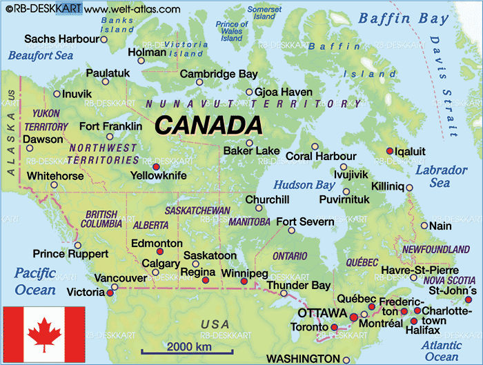
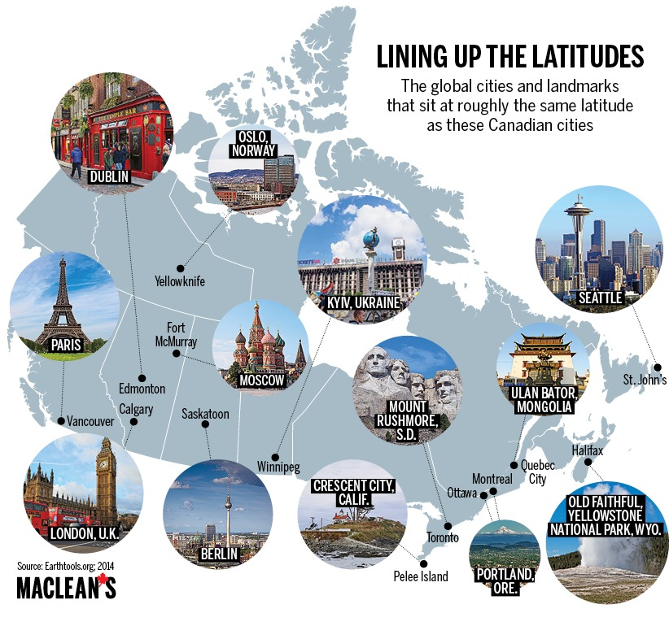
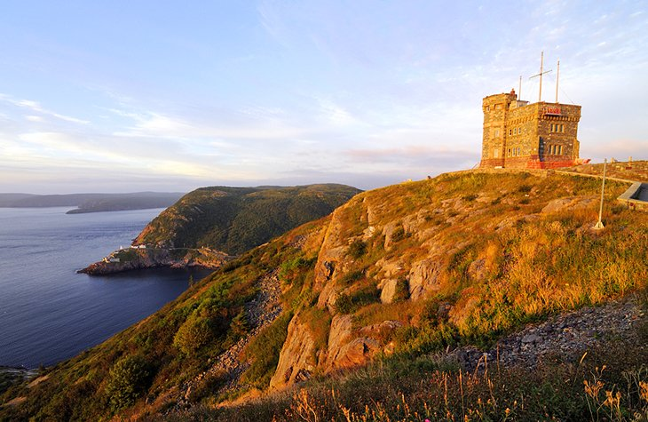

For Prospective Students and Visting Scholars
I currently have several open Ph.D. and M.Sc. positions for highly self-motivated graduate students [Position Posting]. Areas of research include AI-assisted B5G/6G wireless networking, network slicing, edge intelligence, digital-twin-enabled networking, autonomous vehicular networks, and protocol design for Internet-of-Things. If interested, please send me by email your CV, transcripts, sample publications (if any), and TOFEL/IELTS scores. I will consider to hire undergraduate research assistants, if appropriate, to get involved in related research activities. Interested students can refer to the [Faculty of Science Website] for useful information on the application process and funding opportunities.
I also plan to host visiting professors/post-doctoral fellows/graduate students worldwide through different scholarship programs. Visiting graduate students refer to the [Application Guide]. For Chinese students, please visit the [China Scholarship Council (CSC) Website] for information on joint/visiting graduate and postdoc programs.
Application to Graduate Programs at the Department of Computer Science
- The Computer Science Department offers both Ph.D. [LINK] and M.Sc. programs (Thesis Route and Work-term Route) [LINK]. More information can be found at the [Department Website for Graduate Students].
- Admission to the Ph.D. or M.Sc. (Thesis Route) program is granted for the Fall and Winter semesters mainly (application deadline: Dec. 1st and May 1st). Flexibility will be considered after the deadlines for admission in all semesters. Thesis-based applicants are strongly encouraged to contact me showing the research interests before making an application.
- Complete applications should reach the School of Graduate Studies (SGS). Please refer to the [Application Guide] for details.
- Compared with the universities of the same tier, graduate tuition at the Memorial University is among the lowest in Canada [LINK]. The university and supervisors collaboratively provide competitive funding packages [LINK] to financially support our Computer Science graduate students in Ph.D. and M.Sc. (Thesis Route) programs.
About Memorial University of Newfoundland
|
|
|
About St. John's Metropolitan Area
- City of St. John's: the capital and largest city of the Canadian province, Newfoundland and Labrador, and the most easterly coastal city in North America with beatiful landscape [Wikipedia]. St. John's sits at roughly the same latitude as Seattle in USA.
 |
 |
- St. John's Metropolitan Area: the most populated metropolitan area in the Canadian province of Newfoundland and Labrador, with a population of approximately 219,207 (as of 1 July 2017). The St. John's Metropolitan Area is Canada's 20th-largest metropolitan area and the second-largest Census Metropolitan Area (CMA) in Atlantic Canada, after Halifax [Wikipedia].
The Harbor and Water Street

Signal Hill National Historic Site
Cape Spear Lighthouse National Historic Site